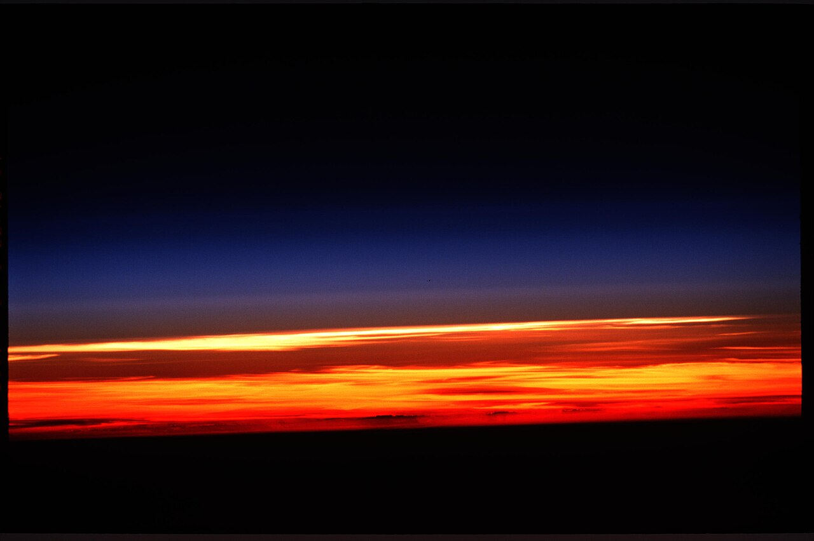

동기 유발
매일 햇빛을 받는데, 왜 지구는 계속 뜨거워지지 않을까?
교과서 p. 88학습 목표
- 지표와 대기의 열 출입과 관련된 물리 과정을 설명할 수 있다.
- 전 지구 평균 열수지를 해석할 수 있다.
P. Horálek / ESO, CC BY 4.0

NASA, 퍼블릭 도메인
지구는 태양으로부터 쉬지 않고 에너지를 받지만 평균 기온은 거의 일정하다. 왜 그럴까?
예시: 받는 만큼의 에너지를 우주로 내보내기 때문입니다. 태양은 1초에 약 4 × 10²⁶ J을 내보내며 지구에는 그중 약 20억분의 1이 도달한다는 점을 함께 소개합니다. 교과서 운영안은 2차시(지표와 대기의 열 출입 / 지구 평균 열수지)입니다.
2차시(100분) 수업 운영안
| 차시 | 단계 | 시간 | 활동 |
|---|---|---|---|
| 1차시 | 동기 유발 | 5분 | 파란 하늘·붉은 노을·흰 구름 사진, "같은 햇빛인데 왜 색이 다를까?" |
| 핵심 개념 1 | 25분 | 산란·반사·흡수·굴절의 뜻과 생활 속 현상, 표면별 반사율, 대기 위·지표의 태양 복사 스펙트럼 비교 | |
| 복사 평형 | 10분 | 복사 평형의 뜻, 들어온 100 = 나간 30 + 70 | |
| 정리 | 10분 | O/X ① | |
| 2차시 | 핵심 개념 2 | 25분 | 지구 평균 열수지 그림 해석: 우주·대기·지표 각각의 수지 맞추기, 숨은열의 역할 |
| 온실 효과 | 10분 | 온실 기체 증가 → 열수지 변화 → 되먹임(빙하-반사율) | |
| 정리 | 7분 | O/X ②, 열수지 빈칸 채우기 | |
| 형성 평가 | 8분 | 문항 풀이, 스스로 확인하기 |
핵심 개념 1
지표와 대기의 열 출입
교과서 p. 88 ~ 89태양 빛이 대기를 만나면 일어나는 네 가지 일
- 산란: 햇빛이 기체 분자나 미세한 먼지를 만나 여러 방향으로 흩어지는 현상. 일부는 우주로 되돌아가고 일부는 지표로 향한다.
- 파란빛이 붉은빛보다 잘 산란된다 → 낮에는 하늘이 파랗다.
- 태양 고도가 낮으면 햇빛이 지나는 대기가 두꺼워 파란빛은 다 흩어지고 붉은빛만 남는다 → 해 질 녘 태양이 붉다.
- 반사: 구름이나 지표에서 햇빛이 되돌아 나간다. 반사하는 정도인 반사율은 구름의 양, 지표가 눈·흙·식물로 덮인 정도에 따라 다르다.
- 흡수: 구름, 대기 중 오존·수증기, 지표가 흡수한다. 산란·반사와 달리 흡수는 대기와 지표의 온도를 직접 높인다. 대기는 파장에 따라 골라서 흡수하지만, 지표는 거의 모든 파장을 흡수한다.
- 굴절: 대기는 지표로 갈수록 밀도가 커서 햇빛이 지표 쪽으로 휜다. 해가 수평선 아래로 진 뒤에도 잠시 해가 보이는 까닭이다.
| 표면 | 두꺼운 구름 | 얇은 구름 | 눈 | 모래사장 | 젖은 흙 | 풀 |
|---|---|---|---|---|---|---|
| 반사율 (%) | 70~90 | 25~30 | 50~90 | 20~40 | 15~25 | 5~25 |
시뮬레이션 1태양 고도와 하늘의 색
태양 고도를 낮춰 하늘과 태양의 색이 어떻게 바뀌는지 보자. 고도 0°에서는 굴절 때문에 실제로는 수평선 아래인 태양이 보이는 모습도 확인하자. 색은 개념을 보여 주기 위한 표현이다.
자세히 알아보기 ① 햇빛이 대기를 만나면 심화 정리
| 과정 | 뜻 | 생활 속 현상 |
|---|---|---|
| 산란 | 공기 분자, 먼지, 수증기, 구름 입자 등에 부딪혀 빛이 여러 방향으로 흩어짐 | 파란 하늘, 붉은 노을(파장에 따라 산란 정도가 다름), 흰 구름(모든 색을 고르게 산란) |
| 반사 | 표면에 닿은 빛이 같은 각도로 되돌아 나감 | 눈과 두꺼운 구름이 하얗게 빛남 |
| 흡수 | 빛 에너지가 물체 안으로 들어가 주로 열에너지로 바뀜 | 지표와 대기의 온도 상승 |
| 굴절 | 밀도가 다른 공기층을 지나며 속도가 바뀌어 진행 방향이 꺾임 | 해가 진 뒤에도 잠시 보이는 태양, 신기루 |
| 표면 | 반사율(%) | 표면 | 반사율(%) |
|---|---|---|---|
| 두꺼운 구름 | 70~90 | 모래사장 | 20~40 |
| 갓 내린 눈 | 50~90 | 젖은 흙 | 15~25 |
| 얇은 구름 | 25~30 | 풀밭 | 5~25 |
- 반사율(알베도): 들어온 태양 복사 중 반사·산란으로 우주로 되돌아가는 비율. 지구 전체 평균은 약 30%이고, 구름의 양과 지표 상태(눈, 얼음, 숲, 바다 등)에 따라 달라진다.
개념 확인 ① O/X
구름이 흰색으로 보이는 것은 구름 입자가 가시광선을 고르게 산란하기 때문이다.
흐린 지역은 맑은 지역보다 태양 복사의 반사율이 작다.
토양이 빙하로 덮이면 지표가 흡수하는 태양 복사 에너지는 감소한다.
대기 중 먼지나 화산재가 늘어나면 태양 복사의 산란이 감소한다.
해가 진 뒤에도 잠시 태양이 보이는 것은 빛의 굴절 때문이다.
핵심 개념 2
지구 평균 열수지
교과서 p. 90 ~ 91해 보기 · 지구 평균 열수지 해석하기
- 지구 열수지: 지구가 태양으로부터 흡수하고 방출하는 에너지의 양. 지구는 받는 만큼 내보내 균형을 이룬다.
- 도달하는 태양 복사를 100이라 하면 30은 산란·반사되어 우주로 되돌아가고, 나머지 70 중 23은 대기와 구름이, 47은 지표가 흡수한다.
- 우주로 나가는 지구 복사는 70(대기와 구름의 방출 58 + 대기의 창으로 12)으로, 흡수한 양과 같다.
- 지구 전체뿐 아니라 대기와 지표 각각에서도 흡수량과 방출량이 같다.
- 지구에 도달하는 태양 복사 중 대기와 지표에서 반사되는 에너지는 모두 얼마인가?
- 대기와 지표가 흡수하는 에너지와 방출하는 에너지는 각각 얼마인가?
- 온실 기체의 농도가 늘어나면 지표 온도는 어떻게 될까? (시뮬레이션 2)
1. 30 (대기와 구름의 산란·반사 23 + 지표의 반사 7)
2. 대기: 흡수 156 = 방출 156 / 지표: 흡수 145 = 방출 145
3. 대기의 재복사가 늘어나 지표 온도가 높아질 것이다.
2. 대기: 흡수 156 = 방출 156 / 지표: 흡수 145 = 방출 145
3. 대기의 재복사가 늘어나 지표 온도가 높아질 것이다.
인터랙티브 그림지구 평균 열수지 (태양 복사 = 100)
노랑 = 태양 복사, 빨강 = 지구 복사(적외선), 하늘색 = 잠열·대류·전도. 버튼을 눌러 해당 부분의 화살표만 남기고 들어오는 양과 나가는 양을 비교하자. 수치 출처: 미국해양대기청(NOAA), 2023.
온실 효과와 열수지의 균형
- 대기가 흡수한 에너지 중 일부는 온실 효과로 지표에 다시 복사되어 지표를 데우고, 지표는 이 에너지를 다시 대기로 내보낸다. 이 과정이 반복되어 지구는 대기가 없을 때보다 높은 온도를 유지한다.
- 열수지의 균형이 깨지면 기후 변화가 일어날 수 있다.
- 최근의 지구 온난화는 산업 혁명 이후 화석 연료 사용이 늘어 온실 기체 농도가 높아진 것이 주요 원인이다. 온실 기체가 많아지면 온실 효과가 강해져 평균 온도가 올라간다.
시뮬레이션 2온실 기체의 양과 지표 온도
비율을 0으로 하면 온실 효과가 없는 지구, 약 78%면 지금의 지구와 비슷하다. 온실 기체가 늘어 비율이 커지면 지표 온도가 어떻게 되는지 확인하자.
스스로 확인하기
1. 태양 복사가 대기에 도달할 때 일어나는 물리 과정을 설명해 보자.
기체나 먼지 입자에 의해 산란되거나, 구름과 지표에서 반사되어 우주로 되돌아가기도 한다. 구름·대기·지표에 흡수되기도 하고, 밀도가 큰 지표 쪽으로 굴절되기도 한다.
2. 지구 전체의 평균 기온이 거의 일정한 까닭은?
지구가 태양으로부터 받는 만큼의 에너지를 우주로 방출해 균형을 이루기 때문이다.
3. 창의력 더하기 · 바람 없는 밤, 구름이 두꺼우면 구름이 없을 때보다 따뜻한 까닭은?
구름이 지표에서 나간 에너지를 흡수했다가 다시 지표로 내보내므로, 지표가 식는 속도가 느려지기 때문이다.
자세히 알아보기 ② 지구 평균 열수지, 세 곳에서 맞춰 보기 심화 정리
- 복사 평형: 들어오는 복사 에너지와 나가는 복사 에너지가 같아 온도가 일정하게 유지되는 상태. 지구는 흡수한 태양 복사만큼 적외선(지구 복사)을 우주로 내보낸다.
| 장소 | 들어옴 (흡수) | 나감 (방출) |
|---|---|---|
| 지구 전체 (대기 꼭대기) | 태양 복사 100 | 반사·산란 30 (대기·구름 23 + 지표 7) + 지구 복사 70 (대기·구름 58 + 대기의 창 12) = 100 |
| 대기 | 태양 복사 23 + 지표 복사 104 + 숨은열 24 + 대류·전도 5 = 156 | 우주로 58 + 지표로 재복사 98 = 156 |
| 지표 | 태양 복사 47 + 대기의 재복사 98 = 145 | 지표 복사 116 + 숨은열 24 + 대류·전도 5 = 145 |
집중 분석 · 숫자에서 읽어 낼 것
• 지표는 태양(47)보다 대기(98)에게서 더 많은 에너지를 받는다 → 온실 효과의 크기를 보여 준다.
• 지표 복사 116 중 104를 대기가 흡수하고, 12만 대기의 창으로 바로 빠져나간다.
• 지표 → 대기로 '순수하게' 넘어가는 에너지: 복사 6(= 104 − 98), 대류·전도 5, 숨은열 24 → 숨은열이 가장 크다.
• 세 곳 모두 들어온 양 = 나간 양 → 각각 복사 평형
자세히 알아보기 ③ 온실 기체가 늘면 열수지는? 심화 정리
- 변화의 순서
- 화석 연료 사용 등으로 온실 기체 농도 증가
- → 대기가 지구 복사(적외선)를 더 많이 흡수
- → 지표로 되돌아오는 대기의 재복사 증가
- → 지표와 대기의 온도 상승
- → 더 따뜻해진 지구가 더 많이 방출해 새로운 복사 평형에 이를 때까지 온난화가 이어진다.
| 영향 | 내용 |
|---|---|
| 해수면 상승 | 해수의 열팽창 + 대륙 빙하의 융해 |
| 구름 변화 | 증발량이 늘어 구름의 양과 분포가 변하고, 지구 반사율도 바뀔 수 있다 |
| 빙하-반사율 되먹임 | 기온 상승 → 극지방 빙하 감소 → 반사율 감소 → 흡수 증가 → 기온 더 상승 (온난화 강화) |
개념 확인 ② O/X
지구는 흡수한 태양 복사 에너지(약 70)와 같은 양의 지구 복사 에너지를 우주로 방출한다.
지표가 흡수하는 에너지는 태양 복사가 대기의 재복사보다 많다.
지표에서 대기로 전달되는 에너지 중 숨은열의 기여가 가장 크다.
대기가 흡수하는 에너지와 방출하는 에너지의 양은 같다.
극지방 빙하가 줄어들면 지구 반사율이 커져 온난화가 약해진다.
형성 평가
개념 확인 문제
그림 출처
사진은 ESO(CC BY 4.0)와 NASA(퍼블릭 도메인) 자료입니다. 열수지 수치는 미국해양대기청(NOAA, 2023) 자료이며, 그림과 시뮬레이션은 직접 만들었습니다.